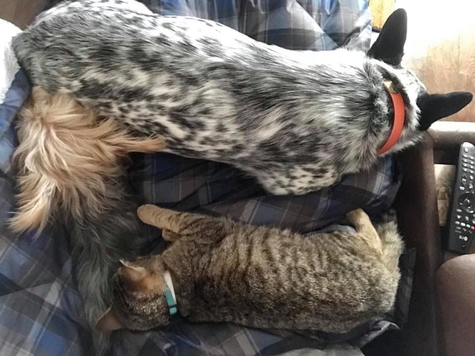
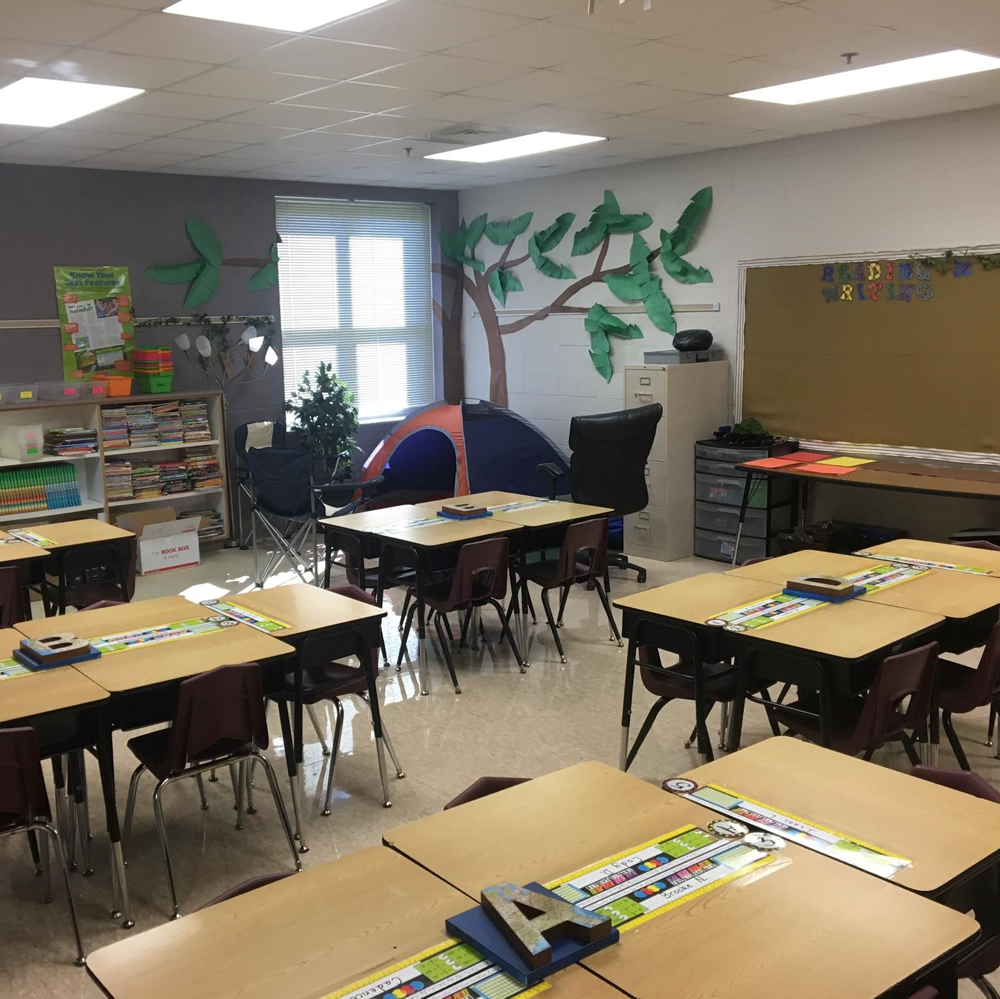
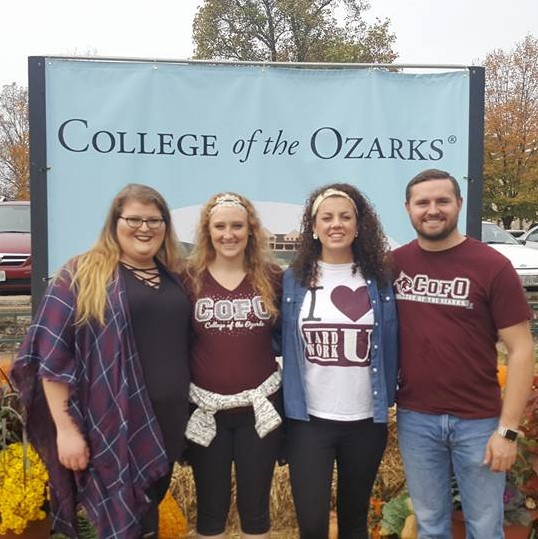
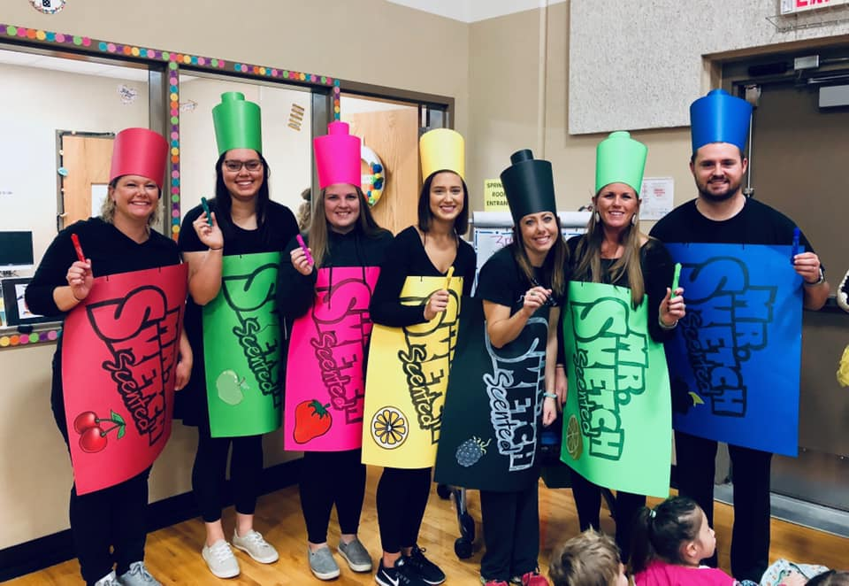
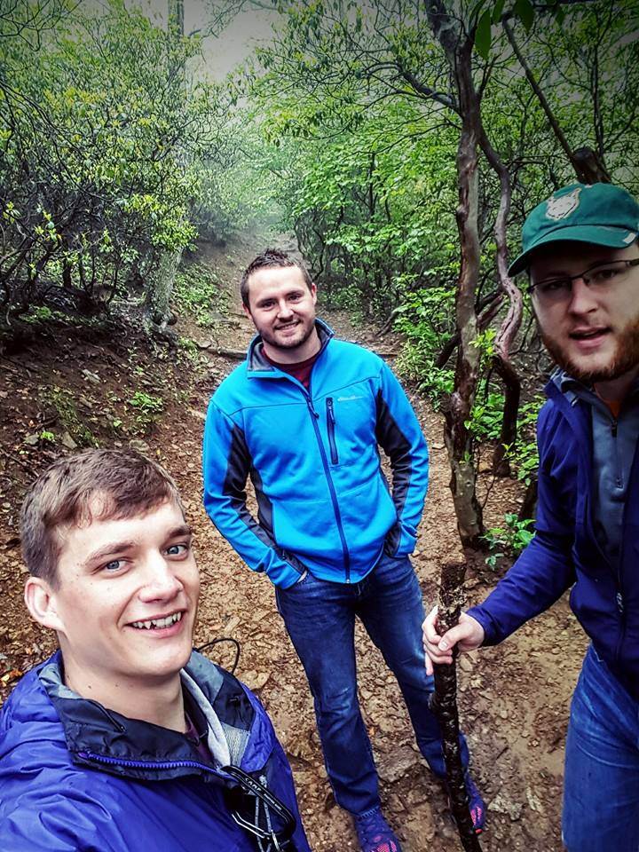
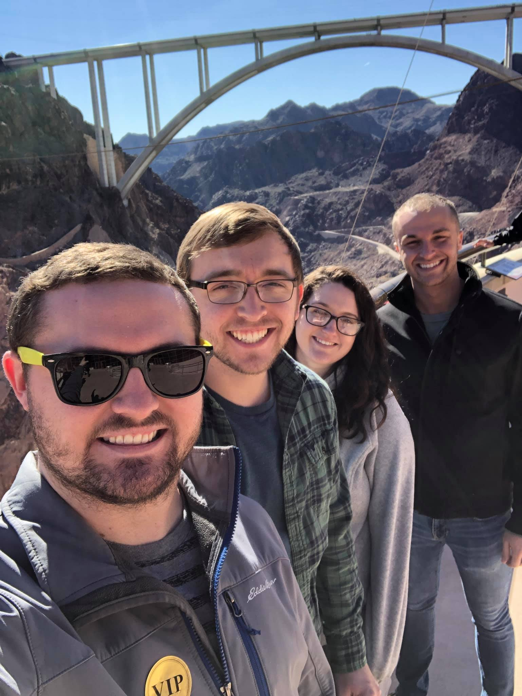
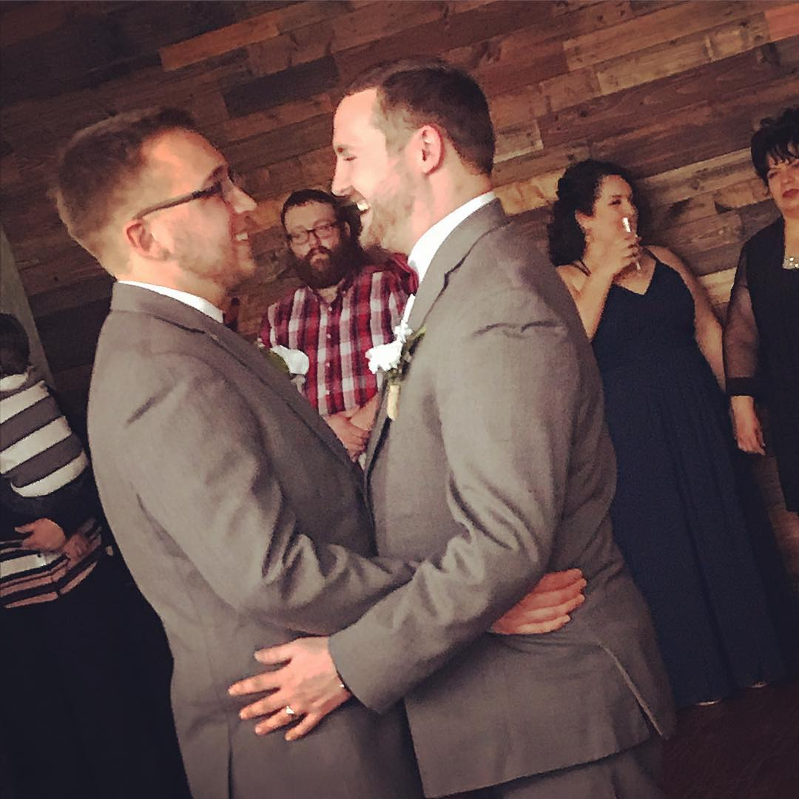
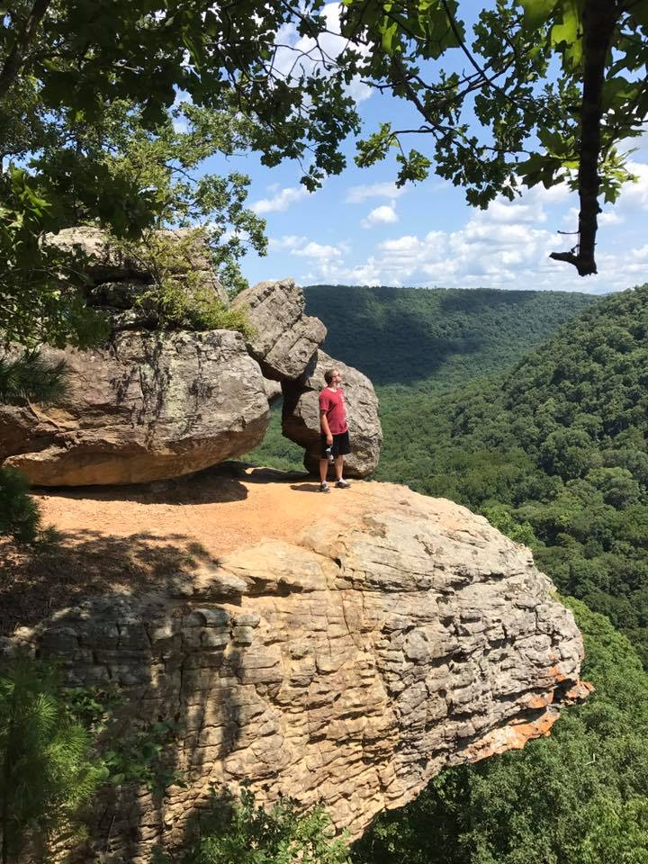
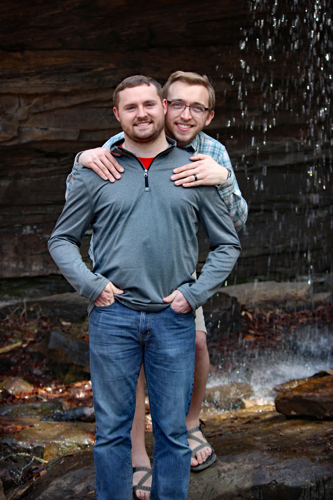

I enjoy the outdoors, whether it is hiking or mountain biking. I am an avid storm chaser. My favorite color is blue, favorite number is 3 (lucky number), I can drink an entire gallon of sweet tea in no time, and I know nearly every make and model of car as well as their parts. My very private goal is to be the house seen from space, thanks to my Christmas lights display! Moreover, I am told that I am a jack of all trades. I consider myself a very social person and adore game nights with friends and family. I am newly married to my husband Hunter. Together we have two dogs, Ruby and Mocha. This year, we added a beautiful cat named Maximus too. I knew I wanted to teach since the age of 4, when I interacted with my first preschool and Head Start teachers in little Mansfield, Missouri. Lastly, I enjoy my career as a teacher around the Springfield, Missouri area.
I have had many struggles and battles to fight as a child. Coming from a small town left many with the feeling of unsuccess. However, I knew that I had more in me and that I could reach my fullest potential if I put my mind to it. My parents were supportive of education, but often made it difficult for me to learn effectively. I was surrounded with drugs, alcohol, and abuse in many forms. I moved out at the age of 17 to live with my oldest sister, then later moved nearly 50 minutes away from my high school to gain financial assistance from an older family in my church. They were the life-line. I had accrued quite a bit of debt and they paid that off for me so that I could focus on school and work only. Without their gracious love and kindness, life could be much different than it is now.
I pursued my undergraduate studies in elementary education and worked off my tuition while in college. During that time, my father was incarcerated and shortly after, my mother passed away. This left all the funeral expenses and arrangements for me to take on. Many were afraid I would not return to classes, but I needed my mind to stay busy. I was out for a week, then returned. I graduated with my bachelor's degree and with Cum Laude honors. My drive and passion were fueled by the situations I dealt with as a child. The teachers, administrators, and other adults who sacrificed things for me. They could see something in me, even when at times, it was hard for me to see it in myself. I continue to grow each year in my profession and strive to be the same leader that those people were to me. Afterall, these children are our future. They need our support. For some, it takes a village to raise the child.
You are more than welcome to look further into what I have achieved and what I might be able to do for you. This formal resume discusses the typical items that would be seen in any resume. Everything on this resume can be verified and has validity.
Resume